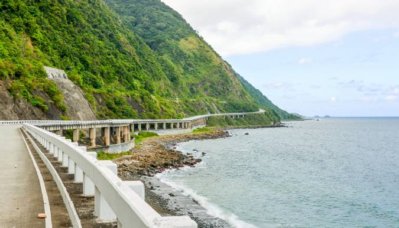
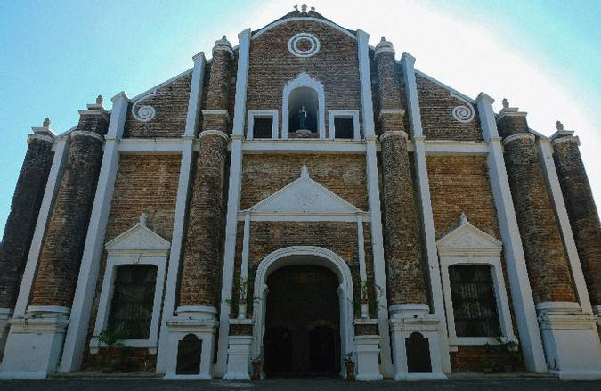
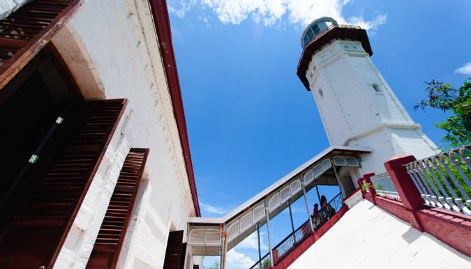
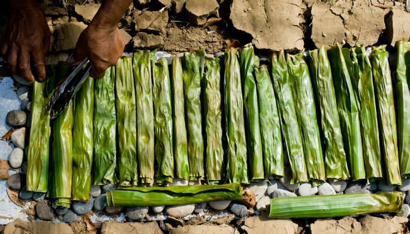
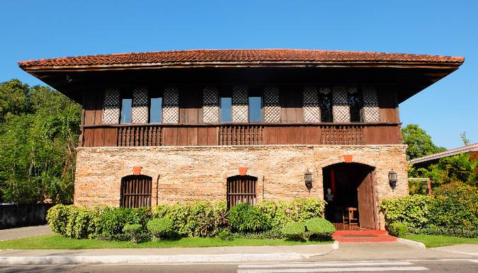

Ilocos Norte Itinerary:
Ultimate Travel Guide
The word laoag means “bright” or “light” in the native Ilocano language of Ilocos region, that’s why Laoag City is called “The Sunshine City”. It's the provincial capital of Ilocos Norte, has a compact land area, but it’s packed with must-see tourist spots, rugged and mountainous terrain, and amazing beaches.

With rich baroque architecture, abundant rocky coastlines, and the remarkable Cordillera Mountains, Ilocos Norte is a coastal province where history meets natural beauty. Whether you’re exploring the charming Spanish heritage in Paoay Church, sliding down the sand dunes, gazing at the scenic row of windmills, or catching a perfect wave, you’re in for a fresh experience and a perfect new beginning in Ilocos Norte!
Traveling – it leaves you speechless,
then turns you into a storyteller
- Visit the biggest church in Ilocos Norte
- Climb up to Cape Bojeador Lighthouse
- Bite into local delicacies
- Step back into history
- Go sand boarding and ride a 4x4 at the sand dunes
-
While many opt to go to the Paoay Sand Dunes, visitors should try heading over to La Paz Sand Dunes in Laoag, as well. Just as thrilling and exhilarating, the one-hour adventure entails sandboarding lessons and a bumpy ride to the sand dunes that rewards guests with breathtaking views of the surrounding area and of the South China Sea.
- Visit the country’s 4th longest bridge
Considered one of the most photographed tourist spots in Ilocos Norte, the Patapat Viaduct is a 1.3 km long bridge that connects the Maharlika Highway to the Cagayan Valley Region.

Sta. Monica Church, formerly known as San Miguel Church, is the biggest church in the region. The church was built in 1779 in honor of the first Augustinian missionaries who made their way to Sarrat, Ilocos Norte. The church is connected to a former convent known as Casa del Palacio Real and stands beside a bell tower.

Dubbed a national treasure heritage by the National Museum, Cape Bojeador or Burgos Lighthouse was built in 1892 atop a hill called Vigia de Nagparitan. As one of the last remaining Philippine Spanish Lighthouses, Cape Bojeador has become a busy tourist attraction despite it still being operational.

Say Ilocos and one of the first things that pop into mind are empanadas, especially those from Batac City. Batac is Ilocos Norte’s oldest town and is so well-known for the empanadas that they even have a festival for it every June. Batac empanadas are a bright orange, deep fried and stuffed with hard boiled egg, green papaya and longganisa. Make sure you bite into glutinous rice treats, as well. Especially, “Tupig” which is grilled in banana leaves and topped with melted butter, grated coconut and sesame seeds. Bite into “Patupat”, which is made with coconut milk, sugar and a sprinkle of salt. And of course, try out “Sapin-sapin” which is made out of several layers of colored glutinous rice and coconut milk.

Overshadowed by neighboring Pagudpud and Laoag, Sarrat is home to the biggest church in Ilocos Norte and the birthplace of former president Ferdinand E. Marcos. While visitors often opt to visit the grand Malacanang of the North in Paoay (where he lived while president), it’s quite refreshing to visit his humble childhood home.
